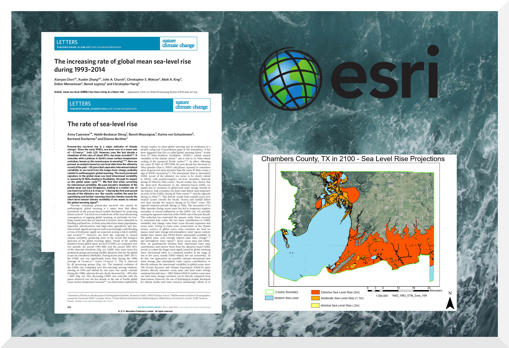

Sea Level Modeling - Chambers County, TX
In Climate Change Impacts in the United States: The Third National Climate Assessment, it is stated that global sea level rise since 2014 should be expected to range from 0.2 meters to 2 meters by the end of the century (Melillo et al., 2014). This interested me in the implications for rapidly growing coastal regions such as Chambers County, TX.
I devised three scenarios: 0.2 meter rise (best case), 2 meter rise (worst case), and 1.1 meter rise (moderate case). Using ArcGIS in tandem with high resolution DEM (elevation) data, I created a graphic depicting the 2100 coast in each scenario. Further, I used ArcGIS to quantify the percentage of Chambers County land that would be lost in each scenario.